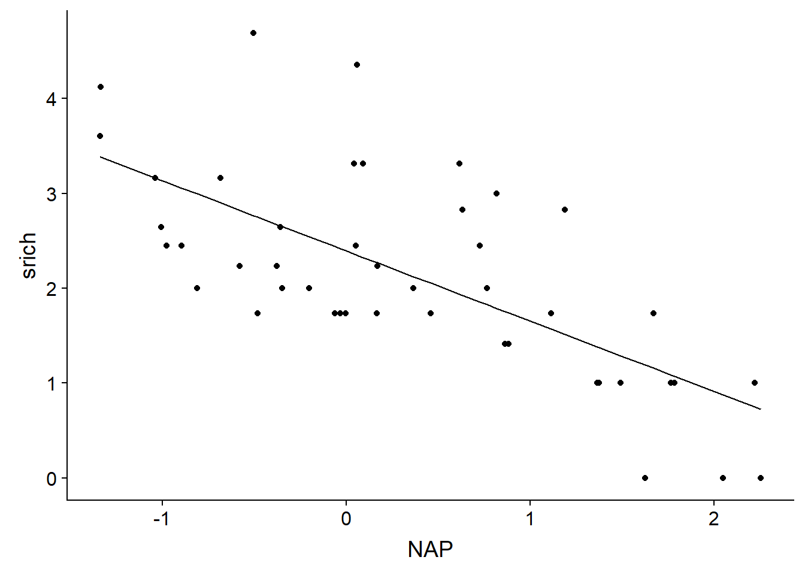
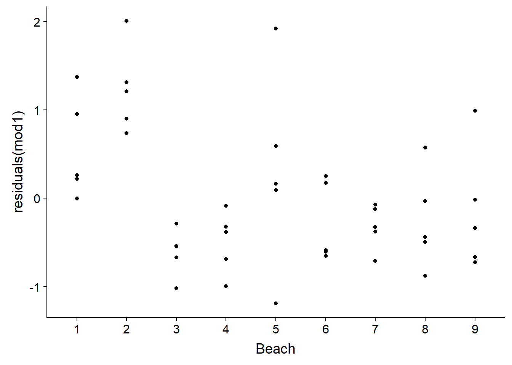
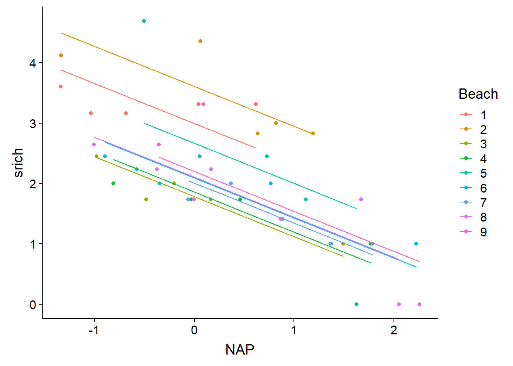
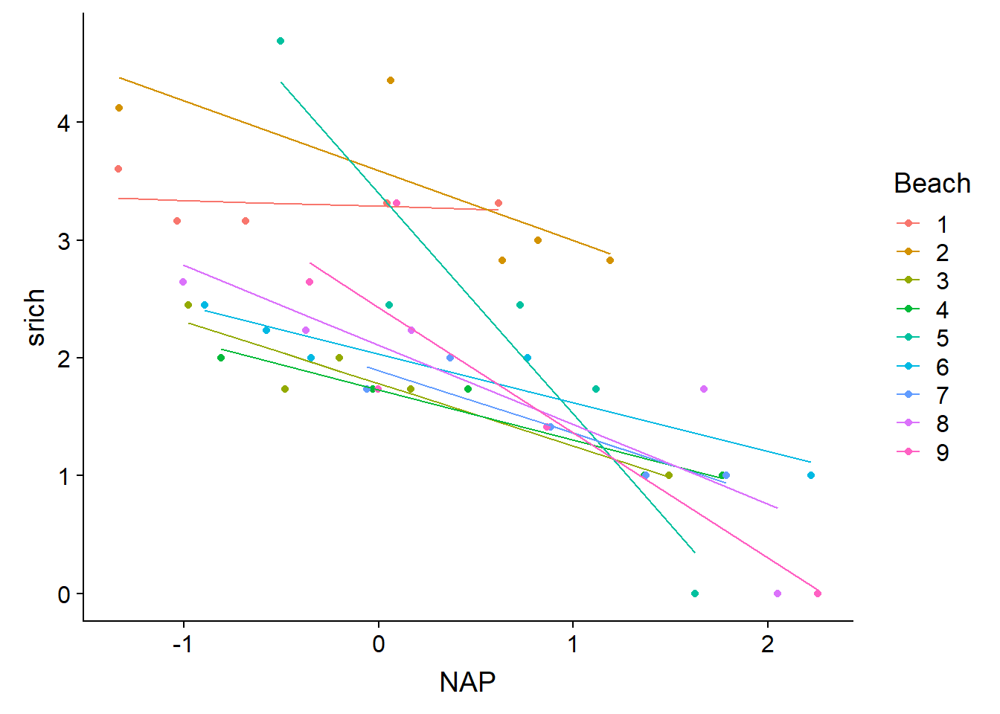
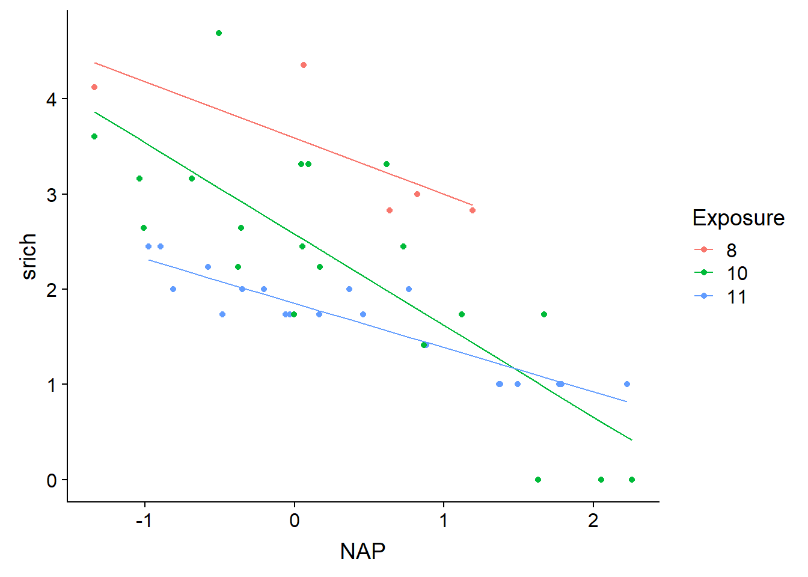
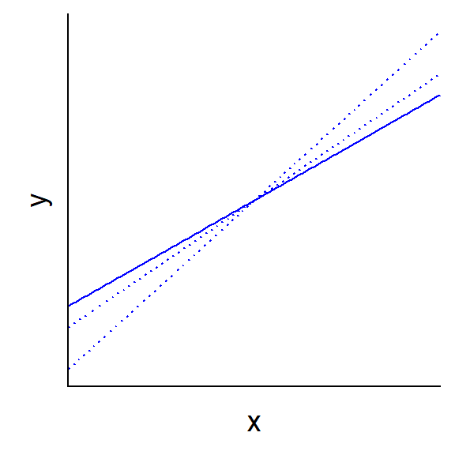
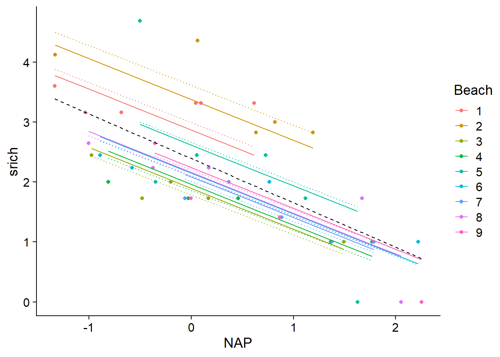
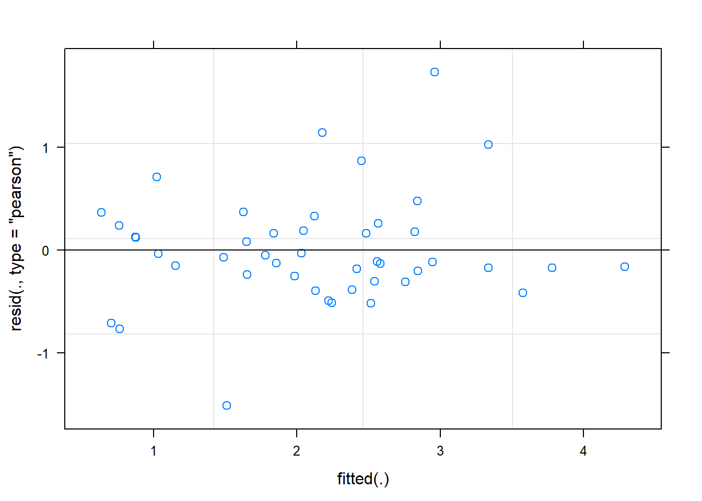
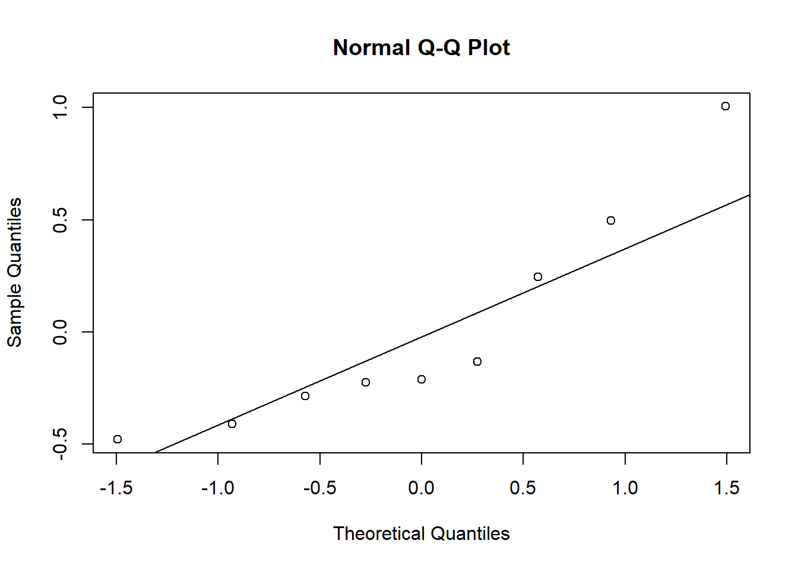
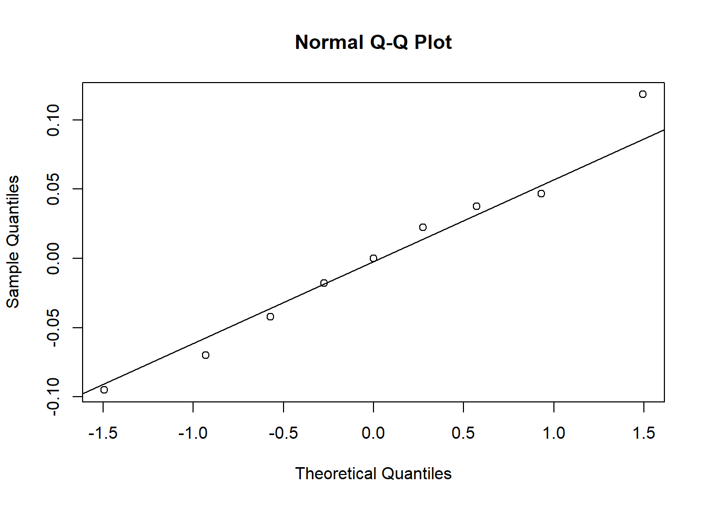

Modèles linéaires mixtes, partie 1
18 novembre 2019
Objectifs
Appliquer un modèle linéaire mixte à des données groupées.
Expliquer comment un modèle mixte constitue un compromis entre un modèle ignorant l’effet de groupe et un modèle à effets fixes par groupe.
Déterminer les situations où il est le plus bénéfique d’utiliser un modèle mixte.
Motivation
Exemple: Croissance de plusieurs espèces dans une forêt
Supposons que vous devez modéliser la croissance des arbres dans une forêt mixte. Vous avez mesuré les variables numériques suivantes sur un échantillon de 100 arbres de différentes espèces dans une parcelle de recherche:
- la croissance annuelle (variable réponse);
- le diamètre (DHP) ;
- l’âge;
- l’indice de compétition (IC, basé sur le nombre et la taille des arbres voisins).
Pour cet exercice, vous pouvez supposer que les variables ont été transformées pour assurer que l’effet de chaque prédicteur soit linéaire, et que la portion aléatoire de la réponse suit une distribution normale.
Quel type de modèle utiliseriez-vous pour représenter la relation entre la croissance annuelle et les trois prédicteurs?
Si la croissance moyenne dépend de l’espèce, comment inclure cet effet dans votre modèle?
Si l’effet des prédicteurs numériques sur la croissance dépend de l’espèce, comment inclure cet effet dans votre modèle?
Est-ce que les méthodes proposées en (b) et (c) fonctionnent mieux avec peu d’espèces (ex.: 100 arbres divisés en 2 espèces) ou beaucoup d’espèces (ex.: 100 arbres divisés en 20 espèces)? Est-ce qu’elles fonctionnent mieux si le nombre d’arbres échantillonné par espèce est semblable (ex.: 5 arbres pour chacune des 20 espèces) ou variable (ex.: de 2 à 30 arbres dépendant de l’espèce)?
Pouvez-vous utiliser ce modèle pour prédire la croissance d’une espèce qui n’est pas représentée dans votre échantillon de 100 arbres?
Supposons maintenant que vous connaissez certaines caractéristiques de chaque espèce qui pourraient expliquer les différences entre espèces, par exemple:
- le degré de tolérance à l’ombre (variable catégorielle);
- la surface foliaire spécifique (SFS, variable numérique).
Comment pouvez-vous inclure ces caractéristiques dans votre modèle?
Est-ce que le modèle proposé en (a) fonctionne mieux avec peu d’espèces ou beaucoup d’espèces?
Pouvez-vous utiliser ce modèle pour prédire la croissance d’une espèce qui n’est pas représentée dans votre échantillon de 100 arbres?
Finalement, supposons que vous avez mesuré la croissance et les autres prédicteurs individuels sur les même 100 arbres pour trois années consécutives.
Comment pourriez-vous ajouter la variation de croissance d’une année à l’autre dans votre modèle? Serait-il utile d’ajouter des variables météorologiques du site (ex.: température moyenne) pour expliquer cette variation interannuelle?
Du point de vue statistique, est-ce que le fait de mesurer les mêmes arbres à chaque année influence l’exactitude des conclusions de la régression?
Exemple: Faune benthique aux Pays-Bas
Le jeu de données rikz.csv, tiré du manuel de Zuur et al. (voir références en bas page), présente des données sur les communautés benthiques de 9 plages des Pays-Bas. La richesse spécifique (Richness) a été mesurée pour 5 sites sur chacune des 9 plages (Beach) pour un total de 45 observations. La variable NAP mesure la position verticale de chaque site par rapport au niveau moyen de la mer, tandis que l’indice d’exposition aux vagues (Exposure) est mesuré à l’échelle de la plage.
rikz <- read.csv("../donnees/rikz.csv")
# Corriger la représentation des variables catégorielles
rikz <- mutate(rikz, Beach = as.factor(Beach),
Exposure = as.factor(Exposure))
head(rikz)## Sample Richness Exposure NAP Beach
## 1 1 11 10 0.045 1
## 2 2 10 10 -1.036 1
## 3 3 13 10 -1.336 1
## 4 4 11 10 0.616 1
## 5 5 10 10 -0.684 1
## 6 6 8 8 1.190 2Puisque la réponse est un nombre d’espèces, une régression de Poisson pourrait être plus appropriée. Toutefois, les modèles linéaires mixtes généralisés ne font pas partie de ce cours. Nous appliquons donc une transformation racine carrée à la réponse afin d’utiliser la régression linéaire. Cette transformation améliore généralement l’homogénéité des variances pour les données de comptage.
rikz <- mutate(rikz, srich = sqrt(Richness))À partir de ces données, nous illustrerons différentes stratégies pour tenir compte de la nature groupée des données (9 plages) et du prédicteur défini au niveau du groupe (indice d’exposition).
Modèle 1: Ignorer les groupes
Le premier modèle inclut seulement le prédicteur au niveau du site (NAP), avec un \(R^2\) ajusté de 0.46. L’effet de ce prédicteur est significatif et indique que les sites plus élevés ont une richesse spécifique plus faible.
mod1 <- lm(srich ~ NAP, rikz)
summary(mod1)##
## Call:
## lm(formula = srich ~ NAP, data = rikz)
##
## Residuals:
## Min 1Q Median 3Q Max
## -1.1898 -0.5874 -0.1233 0.2603 2.0089
##
## Coefficients:
## Estimate Std. Error t value Pr(>|t|)
## (Intercept) 2.3952 0.1241 19.295 < 2e-16 ***
## NAP -0.7409 0.1190 -6.224 1.72e-07 ***
## ---
## Signif. codes: 0 '***' 0.001 '**' 0.01 '*' 0.05 '.' 0.1 ' ' 1
##
## Residual standard error: 0.7851 on 43 degrees of freedom
## Multiple R-squared: 0.474, Adjusted R-squared: 0.4617
## F-statistic: 38.74 on 1 and 43 DF, p-value: 1.724e-07Voici la droite représentant les prédictions du modèle en fonction du NAP.
rikz$fit1 <- fitted(mod1)
ggplot(rikz, aes(x = NAP, y = srich)) +
geom_point() +
geom_line(aes(y = fit1))
La régression linéaire suppose que les résidus sont indépendants d’une observation à l’autre. Ce n’est pas le cas ici, puisque les 5 sites d’une même plage sont plus similaires par rapport aux sites de plages différentes.
ggplot(rikz, aes(x = Beach, y = residuals(mod1))) +
geom_point()
Modèle 2: Estimation des coefficients pour chaque groupe
L’ajout du facteur Beach au modèle permet d’estimer les différences systématiques de richesse entre les plages.
mod2 <- lm(srich ~ NAP + Beach, rikz)
summary(mod2)##
## Call:
## lm(formula = srich ~ NAP + Beach, data = rikz)
##
## Residuals:
## Min 1Q Median 3Q Max
## -1.58544 -0.28653 -0.06544 0.23657 1.69043
##
## Coefficients:
## Estimate Std. Error t value Pr(>|t|)
## (Intercept) 2.99457 0.26711 11.211 3.92e-13 ***
## NAP -0.66410 0.09655 -6.878 5.49e-08 ***
## Beach2 0.61544 0.37909 1.623 0.11346
## Beach3 -1.21158 0.37491 -3.232 0.00268 **
## Beach4 -1.13596 0.38510 -2.950 0.00564 **
## Beach5 -0.32863 0.38648 -0.850 0.40093
## Beach6 -0.90219 0.37835 -2.385 0.02265 *
## Beach7 -0.98741 0.39419 -2.505 0.01705 *
## Beach8 -0.89080 0.38392 -2.320 0.02628 *
## Beach9 -0.79350 0.38561 -2.058 0.04712 *
## ---
## Signif. codes: 0 '***' 0.001 '**' 0.01 '*' 0.05 '.' 0.1 ' ' 1
##
## Residual standard error: 0.5882 on 35 degrees of freedom
## Multiple R-squared: 0.7596, Adjusted R-squared: 0.6978
## F-statistic: 12.29 on 9 and 35 DF, p-value: 1.744e-08Ce modèle revient à estimer une ordonnée à l’origine différente pour chaque groupe: le coefficient Intercept est la moyenne de srich pour la première plage lorsque NAP = 0 (au niveau moyen de la mer), la valeur de Beach2 est la différence entre la moyenne des plages 2 et 1, etc.
Le \(R^2\) ajusté a augmenté à 0.70 pour ce modèle. Voici le graphique des droites de prédiction.
rikz$fit2 <- fitted(mod2)
ggplot(rikz, aes(x = NAP, y = srich, color = Beach)) +
geom_point() +
geom_line(aes(y = fit2))
Un modèle plus flexible permettrait à l’effet du NAP (la pente de la droite) de varier d’une plage à l’autre, en ajoutant l’interaction entre NAP et Beach.
mod2_inter <- lm(srich ~ NAP * Beach, rikz)
summary(mod2_inter)##
## Call:
## lm(formula = srich ~ NAP * Beach, data = rikz)
##
## Residuals:
## Min 1Q Median 3Q Max
## -0.84831 -0.16080 -0.03091 0.14909 0.98737
##
## Coefficients:
## Estimate Std. Error t value Pr(>|t|)
## (Intercept) 3.28835 0.24259 13.555 1.45e-13 ***
## NAP -0.05077 0.28172 -0.180 0.858319
## Beach2 0.30239 0.32158 0.940 0.355394
## Beach3 -1.50542 0.31542 -4.773 5.61e-05 ***
## Beach4 -1.56073 0.33715 -4.629 8.25e-05 ***
## Beach5 0.11078 0.35432 0.313 0.756947
## Beach6 -1.25466 0.31812 -3.944 0.000513 ***
## Beach7 -1.39537 0.41116 -3.394 0.002144 **
## Beach8 -1.17907 0.32697 -3.606 0.001242 **
## Beach9 -0.85912 0.33879 -2.536 0.017314 *
## NAP:Beach2 -0.54313 0.36261 -1.498 0.145780
## NAP:Beach3 -0.47943 0.37104 -1.292 0.207267
## NAP:Beach4 -0.37552 0.35511 -1.057 0.299666
## NAP:Beach5 -1.82561 0.38805 -4.705 6.74e-05 ***
## NAP:Beach6 -0.36229 0.33258 -1.089 0.285636
## NAP:Beach7 -0.48212 0.41379 -1.165 0.254155
## NAP:Beach8 -0.62429 0.32975 -1.893 0.069089 .
## NAP:Beach9 -1.01278 0.35527 -2.851 0.008256 **
## ---
## Signif. codes: 0 '***' 0.001 '**' 0.01 '*' 0.05 '.' 0.1 ' ' 1
##
## Residual standard error: 0.4508 on 27 degrees of freedom
## Multiple R-squared: 0.8911, Adjusted R-squared: 0.8225
## F-statistic: 13 on 17 and 27 DF, p-value: 7.079e-09Le \(R^2\) ajusté a augmenté à 0.82, mais ce modèle compte 17 paramètres ajustables pour seulement 45 observations. D’après l’AICc, le modèle sans interaction constitue le meilleur compromis entre complexité et ajustement.
library(AICcmodavg)
aictab(list(mod1 = mod1, mod2 = mod2, mod2_inter = mod2_inter))##
## Model selection based on AICc:
##
## K AICc Delta_AICc AICcWt Cum.Wt LL
## mod2 11 98.64 0.00 0.8 0.8 -34.32
## mod2_inter 19 101.41 2.77 0.2 1.0 -16.50
## mod1 3 110.47 11.82 0.0 1.0 -51.94Voici les droites de prédiction du modèle avec interaction. Ce modèle est presque équivalent à une régression linéaire effectuée indépendamment pour chaque groupe, excepté que la variance des résidus doit être la même pour tous les groupes. Chacune des droites est estimée à partir de seulement 5 observations, c’est pourquoi il est probable que le modèle exagère les différences entres plages (surajustement).
rikz$fit2i <- fitted(mod2_inter)
ggplot(rikz, aes(x = NAP, y = srich, color = Beach)) +
geom_point() +
geom_line(aes(y = fit2i))
Modèle 3: Prédicteur lié aux groupes
Plutôt que d’estimer la richesse moyenne et/ou la relation entre richesse et le NAP de façon indépendante pour chaque plage (comme dans le modèle précédent), nous pourrions plutôt essayer d’expliquer ces différences en fonction de facteurs mesurés au niveau de la plage.
Le modèle suivant suppose que la richesse spécifique (transformée) est une fonction de l’interaction entre NAP (défini par site) et l’indice d’exposition défini par plage.
mod3 <- lm(srich ~ NAP * Exposure, rikz)
summary(mod3)##
## Call:
## lm(formula = srich ~ NAP * Exposure, data = rikz)
##
## Residuals:
## Min 1Q Median 3Q Max
## -1.01561 -0.26022 -0.07632 0.18031 1.62592
##
## Coefficients:
## Estimate Std. Error t value Pr(>|t|)
## (Intercept) 3.5907 0.2641 13.597 < 2e-16 ***
## NAP -0.5939 0.2856 -2.079 0.04420 *
## Exposure10 -1.0101 0.2950 -3.424 0.00146 **
## Exposure11 -1.7375 0.2976 -5.839 8.68e-07 ***
## NAP:Exposure10 -0.3680 0.3113 -1.182 0.24429
## NAP:Exposure11 0.1281 0.3140 0.408 0.68549
## ---
## Signif. codes: 0 '***' 0.001 '**' 0.01 '*' 0.05 '.' 0.1 ' ' 1
##
## Residual standard error: 0.5639 on 39 degrees of freedom
## Multiple R-squared: 0.7538, Adjusted R-squared: 0.7223
## F-statistic: 23.88 on 5 and 39 DF, p-value: 6.417e-11Notez qu’il ne suffit pas de consulter les coefficients pour voir si l’interaction est significative, il faut plutôt se baser sur le tableau d’ANOVA.
anova(mod3)## Analysis of Variance Table
##
## Response: srich
## Df Sum Sq Mean Sq F value Pr(>F)
## NAP 1 23.8787 23.8787 75.0869 1.255e-10 ***
## Exposure 2 11.6166 5.8083 18.2643 2.527e-06 ***
## NAP:Exposure 2 2.4831 1.2416 3.9041 0.02848 *
## Residuals 39 12.4026 0.3180
## ---
## Signif. codes: 0 '***' 0.001 '**' 0.01 '*' 0.05 '.' 0.1 ' ' 1Ici, l’interaction est significative même si les coefficients NAP:Exposure10 et NAP:Exposure11 du modèle ne le sont pas. Ces coefficients indiquent seulement la différence entre les pentes de srich vs. NAP pour les niveaux d’exposition 10 et 8 (dans le premier cas) ou 11 et 8 (dans le second cas). Il est possible que la différence la plus significative soit entre les niveaux 10 et 11, comme le suggèrent les droites de prédiction.
rikz$fit3 <- fitted(mod3)
ggplot(rikz, aes(x = NAP, y = srich, color = Exposure)) +
geom_point() +
geom_line(aes(y = fit3))
Par rapport au modèle précédent, cette approche est non seulement plus parcimonieuse (moins de paramètres à ajuster), mais elle nous permet aussi d’expliquer les différences entre plages en fonction de paramètres environnementaux. Nous pourrions donc appliquer les prédictions du modèle à d’autres plages en autant que nous connaissions leur indice d’exposition.
Dans le cas présent, il semble que l’indice d’exposition explique une bonne partie de la variation entre groupes. Toutefois, comment pourrions-nous inclure des différences qui subsistent entre les groupes après avoir contrôlé l’effet de cet indice?
Dans un contexte de régression linéaire classique, il n’est pas possible d’inclure à la fois une variable catégorielle indiquant le groupe et un prédicteur défini pour chaque groupe. Dans l’exemple suivant, puisque les différences de richesse moyenne entre plages (après avoir contrôlé l’effet du NAP) sont entièrement prises en compte par le facteur Beach, il ne reste plus rien à expliquer par la variable Exposure.
mod_exp_beach <- lm(srich ~ NAP + Beach + Exposure, rikz)
summary(mod_exp_beach)##
## Call:
## lm(formula = srich ~ NAP + Beach + Exposure, data = rikz)
##
## Residuals:
## Min 1Q Median 3Q Max
## -1.58544 -0.28653 -0.06544 0.23657 1.69043
##
## Coefficients: (2 not defined because of singularities)
## Estimate Std. Error t value Pr(>|t|)
## (Intercept) 2.99457 0.26711 11.211 3.92e-13 ***
## NAP -0.66410 0.09655 -6.878 5.49e-08 ***
## Beach2 0.61544 0.37909 1.623 0.11346
## Beach3 -1.21158 0.37491 -3.232 0.00268 **
## Beach4 -1.13596 0.38510 -2.950 0.00564 **
## Beach5 -0.32863 0.38648 -0.850 0.40093
## Beach6 -0.90219 0.37835 -2.385 0.02265 *
## Beach7 -0.98741 0.39419 -2.505 0.01705 *
## Beach8 -0.89080 0.38392 -2.320 0.02628 *
## Beach9 -0.79350 0.38561 -2.058 0.04712 *
## Exposure10 NA NA NA NA
## Exposure11 NA NA NA NA
## ---
## Signif. codes: 0 '***' 0.001 '**' 0.01 '*' 0.05 '.' 0.1 ' ' 1
##
## Residual standard error: 0.5882 on 35 degrees of freedom
## Multiple R-squared: 0.7596, Adjusted R-squared: 0.6978
## F-statistic: 12.29 on 9 and 35 DF, p-value: 1.744e-08Ainsi, nous obtenons des valeurs NA pour les coefficients liés à l’indice exposition. Remarquez que la sortie de ce modèle est identique à celle de mod2. Si on avait écrit la formule avec Exposure avant Beach, le modèle estimerait les effets des deux coefficients de l’indice d’exposition, mais en contrepartie, deux des effets de plage deviendraient NA. Au niveau des prédictions, il s’agirait du même modèle.
Un problème identique survient si on essayait de modéliser une variation de la pente de srich ~ NAP en fonction de l’indice d’exposition et de la plage. Ce modèle serait équivalent à mod2_inter plus haut.
mod_exp_beach <- lm(srich ~ NAP * Exposure + NAP * Beach , rikz)
all.equal(fitted(mod_exp_beach), fitted(mod2_inter)) ## [1] TRUEModèle 4: Modèle linéaire en deux étapes
Pour résoudre le problème évoqué à la fin de la section précédente, nous pourrions d’abord estimer les différences de richesse entre plages à partir des données des sites, puis ensuite modéliser l’effet des plages en fonction de l’indice d’exposition.
Pour la première étape, nous utilisons le modèle 2 ci-dessus (ordonnée à l’origine qui varie par plage), sauf que nous ajoutons - 1 à la formule du modèle pour signifier que l’ordonnée à l’origine est zéro. Ce truc nous permet d’obtenir des coefficients pour chaque plage qui correspondent à l’ordonnée à l’origine de cette plage, plutôt qu’à une différence mesurée à partir d’un niveau de référence. Notez que ce truc fonctionne seulement pour la première variable catégorielle dans une régression.
mod4_1 <- lm(srich ~ NAP + Beach - 1, rikz)
summary(mod4_1)##
## Call:
## lm(formula = srich ~ NAP + Beach - 1, data = rikz)
##
## Residuals:
## Min 1Q Median 3Q Max
## -1.58544 -0.28653 -0.06544 0.23657 1.69043
##
## Coefficients:
## Estimate Std. Error t value Pr(>|t|)
## NAP -0.66410 0.09655 -6.878 5.49e-08 ***
## Beach1 2.99457 0.26711 11.211 3.92e-13 ***
## Beach2 3.61000 0.26440 13.653 1.39e-15 ***
## Beach3 1.78298 0.26307 6.778 7.41e-08 ***
## Beach4 1.85861 0.26839 6.925 4.78e-08 ***
## Beach5 2.66594 0.26948 9.893 1.12e-11 ***
## Beach6 2.09238 0.26404 7.924 2.55e-09 ***
## Beach7 2.00715 0.27616 7.268 1.73e-08 ***
## Beach8 2.10377 0.26751 7.864 3.04e-09 ***
## Beach9 2.20106 0.26879 8.189 1.20e-09 ***
## ---
## Signif. codes: 0 '***' 0.001 '**' 0.01 '*' 0.05 '.' 0.1 ' ' 1
##
## Residual standard error: 0.5882 on 35 degrees of freedom
## Multiple R-squared: 0.9527, Adjusted R-squared: 0.9392
## F-statistic: 70.48 on 10 and 35 DF, p-value: < 2.2e-16Créons ensuite un deuxième jeu de données contenant seulement les plages et leur indice d’exposition. Nous utiliserons pour cela la fonction distinct de dplyr, qui extrait les combinaisons uniques des variables spécifiées dans un tableau de données.
rikz_beach <- distinct(rikz, Beach, Exposure)
rikz_beach## Beach Exposure
## 1 1 10
## 2 2 8
## 3 3 11
## 4 4 11
## 5 5 10
## 6 6 11
## 7 7 11
## 8 8 10
## 9 9 10Nous ajoutons ensuite à ce tableau les coefficients de l’étape 1 qui constituent la réponse à modéliser au niveau de la plage.
rikz_beach$coef <- coef(mod4_1)[-1] # Le coefficient 1 est NAP
mod4_2 <- lm(coef ~ Exposure, rikz_beach)
summary(mod4_2)##
## Call:
## lm(formula = coef ~ Exposure, data = rikz_beach)
##
## Residuals:
## Min 1Q Median 3Q Max
## -0.3876 -0.1523 0.0000 0.1571 0.5032
##
## Coefficients:
## Estimate Std. Error t value Pr(>|t|)
## (Intercept) 3.6100 0.3101 11.640 2.42e-05 ***
## Exposure10 -1.1187 0.3467 -3.226 0.01800 *
## Exposure11 -1.6747 0.3467 -4.830 0.00291 **
## ---
## Signif. codes: 0 '***' 0.001 '**' 0.01 '*' 0.05 '.' 0.1 ' ' 1
##
## Residual standard error: 0.3101 on 6 degrees of freedom
## Multiple R-squared: 0.803, Adjusted R-squared: 0.7373
## F-statistic: 12.23 on 2 and 6 DF, p-value: 0.007645Un des problèmes de cette approche est que chaque plage est considérée comme un seul point à la deuxième étape. Si le nombre d’échantillons différait d’une plage à l’autre, ce modèle sous-représenterait les plages mieux échantillonnés. Pour ce cas-ci, chaque plage a le même nombre de points et les coefficients estimés pour l’indice d’exposition sont très près de ceux obtenus par le modèle 3.
Modèles linéaires mixtes
Les modèles mixtes sont conceptuellement semblables à la régression en deux étapes effectuée ci-dessus, sauf que les deux étapes sont réalisées simultanément afin de tenir compte de l’incertitude des coefficients de groupe. Ce type de modèle est particulièrement utile lorsqu’une ou plusieurs des conditions suivantes s’appliquent:
les données sont groupées ou ont une structure hiérarchique à deux ou plusieurs niveaux (ex.: placettes regroupées par sites regroupés par région);
les variables explicatives sont aussi définies à plusieurs niveaux;
le nombre de groupes est trop grand, ou le nombre d’observations dans certains groupes est trop petit, pour estimer un effet séparé pour chaque groupe;
on s’intéresse davantage à la variation entre les groupes qu’à l’effet de groupes particuliers;
on souhaite appliquer le modèle à des groupes où aucune mesure n’a été prise.
Représentation mathématique d’un modèle linéaire mixte
Un modèle linéaire mixte est une régression linéaire dont un ou plusieurs des coefficients varient d’un groupe d’observations à une autre, et où cette variation est modélisée par une distribution statistique. Ils sont aussi connus sous le nom de modèles hiérarchiques ou multi-niveaux, car ils modélisent la variation à au moins deux niveaux (observation individuelle et groupe).
Nous commencerons par traiter des modèles mixtes où seule l’ordonnée à l’origine varie par groupe. Pour ce type de modèle, la valeur moyenne de la réponse de l’observation \(k\) (\(\hat{y_k}\)) correspond à la combinaison linéaire des prédicteurs \(x_1\), \(x_2\), etc. à laquelle s’ajoute une ordonnée à l’origine spécifique au groupe \(j\) qui contient l’observation \(k\): \(\alpha_{j[k]}\). (Nous utilisons \(\alpha\) plutôt que \(\beta_0\) pour l’ordonnée à l’origine afin de simplifier un peu la notation.)
\[ \hat{y_k} = \alpha_{j[k]} + \beta_1 x_{1k} + \beta_2 x_{2k} + ...\]
Comme pour le modèle de régression linéaire, l’observation \(y_k\) suit une distribution normale autour de sa moyenne. Le suffixe \(y\) a été ajouté à \(\sigma\) pour spécifier qu’il s’agit de l’écart-type des observations \(y\).
\[ y_k \sim N(\hat{y_k}, \sigma_y) \]
Jusqu’à maintenant, ce modèle est identique à celui d’une régression linéaire avec une variable catégorielle, si \(\alpha_j\) était l’ordonnée à l’origine pour la catégorie \(j\). La particularité du modèle mixte est que les \(\alpha_j\) sont des valeurs aléatoires tirées d’une distribution normale avec une moyenne \(\mu_\alpha\) et un écart-type \(\sigma_\alpha\). Autrement dit, les groupes observés font partie d’une “population” de groupes possibles et nous souhaitons estimer la moyenne et la variance de \(\alpha\) dans cette population.
\[ \alpha_{j} \sim N(\mu_\alpha, \sigma_\alpha) \]
L’effet de groupe \(\alpha_j\) est désigné comme un effet aléatoire, en opposition aux effets fixes qui sont estimés de façon indépendante sans faire partie d’une distribution commune (par exemple, les \(m - 1\) coefficients d’un facteur à \(m\) catégories dans une régression linéaire classique). Ce modèle est appelé mixte car il contient à la fois des effets fixes (les \(\beta\) associés aux prédicteurs \(x_1\), \(x_2\), etc.) et des effets aléatoires.
Il n’y a pas de raison particulière d’avoir choisi une distribution normale pour les \(\alpha_j\). Cependant, si tout ce qu’on sait d’une variable est sa moyenne et son écart-type, la distribution normale est dans un certain sens la plus probable, c’est-à-dire celle qui amène le moins de suppositions supplémentaires.
Modèle linéaire mixte avec R
Dans cet exemple, nous ajusterons un modèle mixte du type présenté ci-dessus aux mêmes données du tableau rikz. Le modèle inclut le prédicteur NAP et une ordonnée à l’origine qui varie selon la plage.
Pour estimer les paramètres d’un modèle mixte, nous utilisons la fonction lmer du package lme4. La formule d’un modèle mixte ressemble à celles déjà vues, sauf pour le dernier terme: (1 | Beach). Ce terme signifie que l’ordonnée à l’origine (désignée par 1) varie entre les niveaux de la variable Beach.
library(lme4)
mmod <- lmer(srich ~ NAP + (1 | Beach), rikz)
summary(mmod)## Linear mixed model fit by REML ['lmerMod']
## Formula: srich ~ NAP + (1 | Beach)
## Data: rikz
##
## REML criterion at convergence: 97.1
##
## Scaled residuals:
## Min 1Q Median 3Q Max
## -2.5693 -0.4286 -0.1869 0.3230 2.9399
##
## Random effects:
## Groups Name Variance Std.Dev.
## Beach (Intercept) 0.2957 0.5438
## Residual 0.3460 0.5882
## Number of obs: 45, groups: Beach, 9
##
## Fixed effects:
## Estimate Std. Error t value
## (Intercept) 2.37424 0.20405 11.635
## NAP -0.68063 0.09501 -7.163
##
## Correlation of Fixed Effects:
## (Intr)
## NAP -0.162Regardons les différentes composantes de ce résultat. La première ligne indique que le modèle a été ajusté avec la méthode du maximum de vraisemblance restreint (REML, pour restricted maximum likelihood). Sans entrer trop dans les détails, le REML sert à corriger le biais du maximum de vraisemblance lorsque vient le temps d’estimer des variances (effets aléatoires).
Le bloc d’effets aléatoires (Random effects) contient les estimés pour la variance et l’écart-type de l’ordonnée à l’origine (\(\sigma_\alpha\)), ainsi que la variance et l’écart-type résiduel (\(\sigma_y\)). Le bloc d’effets fixes indique l’estimé pour la moyenne de l’ordonnée à l’origine (\(\mu_\alpha\)) et l’effet du NAP. Le sommaire indique aussi la corrélation estimée entre les deux effets fixes. Une corrélation négative est normale lorsque la valeur moyenne du prédicteur est supérieure à zéro: si on pivote la droite autour de la moyenne de façon à augmenter la pente, la position de l’ordonnée à l’origine descend le long de l’axe des \(y\) (voir diagramme ci-dessous).

Remarquez que lmer ne fournit pas de valeur \(p\) pour les effets estimés, car contrairement au cas d’un modèle linéaire, la distribution exacte de ces estimés n’est pas connue. Nous pouvons néanmoins obtenir des intervalle de confiance approximatifs avec confint.
confint(mmod)## Computing profile confidence intervals ...## 2.5 % 97.5 %
## .sig01 0.2664346 0.9469885
## .sigma 0.4682062 0.7455375
## (Intercept) 1.9537581 2.7916024
## NAP -0.8729868 -0.4948024L’effet du NAP est donc significatif avec un seuil de \(\alpha = 0.05\). Dans ce tableau .sig01 correspond à \(\sigma_\alpha\) et .sigma à \(\sigma_y\). Les écarts-types doivent être positifs. Une valeur inférieure ou égale à zéro pour un écart-type ou son intervalle de confiance indique que le modèle est mal spécifié.
Nous pouvons extraire séparément les effets fixes et aléatoires du modèle avec les fonctions fixef et ranef.
fixef(mmod)## (Intercept) NAP
## 2.3742423 -0.6806307ranef(mmod)## $Beach
## (Intercept)
## 1 0.4962684
## 2 1.0050818
## 3 -0.4791252
## 4 -0.4104708
## 5 0.2444787
## 6 -0.2252788
## 7 -0.2858167
## 8 -0.2124511
## 9 -0.1326862Les effets aléatoires sont les estimés de la différence entre l’ordonnée à l’origine de chaque plage (1 à 9) et leur moyenne donnée par (Intercept). L’ordonnée à l’origine estimée pour la plage 1 est donc 2.37 + 0.50 = 2.87 et ainsi de suite. Plutôt que ce calculer ces valeurs pour chaque plage, nous pouvons les obtenir avec la fonction coef.
coef(mmod)## $Beach
## (Intercept) NAP
## 1 2.870511 -0.6806307
## 2 3.379324 -0.6806307
## 3 1.895117 -0.6806307
## 4 1.963772 -0.6806307
## 5 2.618721 -0.6806307
## 6 2.148964 -0.6806307
## 7 2.088426 -0.6806307
## 8 2.161791 -0.6806307
## 9 2.241556 -0.6806307
##
## attr(,"class")
## [1] "coef.mer"Le résultat de cette fonction nous donne les coefficients de la régression linéaire par groupe. Notre modèle n’inclut pas d’effets aléatoires sur le coefficient de NAP, donc celui-ci est constant pour tous les groupes.
Quelle est la différence entre ces effets estimés pour chaque plage et ceux d’un modèle linéaire classique où la variable catégorielle Beach était spécifiée comme effet fixe? Comparons les droites de prédiction du modèle mixte (lignes pleines) avec celles du modèle 2 vu plus haut (lm(srich ~ NAP + Beach), lignes pointillées). Nous ajoutons aussi la droite correspondant au modèle 1 qui ignore les différences entre plages (traits noirs).
rikz$fitmm <- fitted(mmod)
ggplot(rikz, aes(x = NAP, y = srich, color = Beach)) +
geom_point() +
geom_line(aes(y = fit1), color = "black", linetype = "dashed") +
geom_line(aes(y = fit2), linetype = "dotted") +
geom_line(aes(y = fitmm))
Les prédictions du modèle mixte pour chaque plage sont décalées vers la moyenne générale. Cet effet est plus prononcé à mesure qu’on s’éloigne de la moyenne (voir par exemple la plage 2 en haut du graphique). En statistique, on parle d’une contraction (shrinkage) des estimés des effets de groupe.
Modèle mixte comme compromis entre sous-ajustement et surajustement
Que se passe-t-il ici? En supposant que les effets de chaque plage proviennent d’une distribution commune, le modèle mixte estime l’ordonnée à l’origine de chaque plage en tenant compte non seulement des valeurs mesurées à cette plage, mais aussi de celles des autres plages. Il s’agit donc d’un compromis entre sous-ajustement (ex.: le modèle 1, qui ignore totalement les différences entre plages) et surajustement (ex.: le modèle 2, qui estime indépendamment les moyennes de chaque plage à partir des 5 points de cette plage).
Autrement dit, les différences entre les valeurs moyennes mesurées par plage peuvent être dues soit à des différences réelles de richesse spécifique entre les plages, soit au hasard de l’échantillonnage. L’ANOVA que nous avons vue plus tôt cette session visait à déterminer si ces différences entre groupes d’observations sont trop grandes pour être dues au hasard. Le modèle mixte tente plutôt d’estimer la portion des différences observées qui est due à un réel effet de groupe et la portion qui est due au hasard de l’échantillonnage dans chaque groupe.
Graphiques de diagnostic
La fonction plot appliquée à un modèle mixte ne produit qu’un graphique, celui des résidus en fonction des valeurs attendues.
plot(mmod)
Pour reproduire le diagramme quantile-quantile des résidus, nous pouvons appeler les fonctions qqnorm et qqline. Ce graphique montre que les résidus aux extrêmes sont plus grands que ceux prévus par la distribution normale.
qqnorm(residuals(mmod))
qqline(residuals(mmod))
Dans le modèle mixte, les effets de groupe sont aussi supposés suivre une distribution normale. Nous vérifions cette supposition en réalisant un diagramme quantile-quantile des effets aléatoires (ranef).
beach_coef <- ranef(mmod)$Beach
qqnorm(beach_coef$`(Intercept)`)
qqline(beach_coef$`(Intercept)`)
Même avec seulement 9 points, il est évident que les différences au niveau de la plage ne sont pas normalement distribuées.
Notez que les mesures d’influence des observations comme la distance de Cook ne s’appliquent pas aux modèles mixtes.
Modèle mixte avec prédicteur lié aux groupes
À la fin de la section précédente, nous avons vu que les différences entre chaque plage et la moyenne des données ne suivent pas une distribution normale. Est-ce qu’une partie de ces différences pourrait être expliquée par l’indice d’exposition (Exposure) mesuré par plage?
Pour inclure l’effet d’un prédicteur mesuré au niveau du groupe, nous devons modifier le modèle de la section précédente. L’ordonnée à l’origine par groupe était définie par une distribution normale:
\[ \alpha_{j} \sim N(\mu_\alpha, \sigma_\alpha) \]
Dans ce cas-ci, \(\mu_\alpha\) n’est plus une constante, mais varie de façon linéaire en fonction d’un prédicteur \(u_1\).
\[ \mu_\alpha = \gamma_0 + \gamma_1 u_1 \]
Il s’agit donc d’un modèle de régression à deux niveaux, où \(u_1\) est un prédicteur au niveau du groupe et \(\gamma_1\) est le coefficient de ce prédicteur. D’un point de vue conceptuel, il est utile de différencier les prédicteurs définis par groupe et ceux définis par observation individuelle. Toutefois, nous pourrions aussi ré-écrire le modèle pour séparer les effets fixes (aux deux niveaux) et les effets aléatoires (qui ont une moyenne de 0), par exemple:
\[ y_k = \gamma_0 + \gamma_1 u_{1j[k]} + \beta_1 x_{1k} + \beta_2 x_{2k} + \nu_{j[k]} + \epsilon_k \]
Dans cette représentation, la valeur \(y_k\) pour l’observation \(k\) dépend de l’ordonnée à l’origine \(\gamma_0\), d’un prédicteur de groupe \(u_1\) et de deux prédicteurs individuels (\(x_1\), \(x_2\)). Les deux derniers termes représentent respectivement la variation aléatoire du groupe \(j\) et de l’observation \(k\):
\[ \nu_j \sim N(0, \sigma_\alpha) \] \[ \epsilon_k \sim N(0, \sigma_y) \]
On peut considérer \(\nu_j\) comme la portion du résidu qui est partagée par toutes les observations du groupe \(j\), tandis que \(\epsilon\) est un résidu indépendant d’une observation à l’autre. Pour estimer ce modèle dans R, nous ajoutons simplement le prédicteur Exposure à la formule dans lmer. L’estimation fonctionne sans avoir besoin de dire explicitement à R que la valeur de cette variable est la même pour toutes les observations d’un groupe.
mmod_exp <- lmer(srich ~ NAP + Exposure + (1 | Beach), rikz)
summary(mmod_exp)## Linear mixed model fit by REML ['lmerMod']
## Formula: srich ~ NAP + Exposure + (1 | Beach)
## Data: rikz
##
## REML criterion at convergence: 86
##
## Scaled residuals:
## Min 1Q Median 3Q Max
## -2.38707 -0.48281 -0.07465 0.47962 3.03495
##
## Random effects:
## Groups Name Variance Std.Dev.
## Beach (Intercept) 0.02315 0.1521
## Residual 0.34658 0.5887
## Number of obs: 45, groups: Beach, 9
##
## Fixed effects:
## Estimate Std. Error t value
## (Intercept) 3.62081 0.30510 11.867
## NAP -0.70349 0.09107 -7.724
## Exposure10 -1.11766 0.33998 -3.287
## Exposure11 -1.66923 0.34021 -4.907
##
## Correlation of Fixed Effects:
## (Intr) NAP Exps10
## NAP -0.082
## Exposure10 -0.891 -0.007
## Exposure11 -0.888 -0.037 0.800Quelques notes sur ce résultat:
L’estimé de \(\sigma_\alpha\) (0.15) a beaucoup diminué par rapport à sa valeur dans le modèle précédent (0.54), montrant que le prédicteur explique une bonne partie des différences observées entre les groupes. L’écart-type des observations individuelles (0.59) n’a pas changé, ce qui est attendu car un prédicteur lié au groupe ne peut expliquer les différences entre observations d’un même groupe.
Il est normal d’observer des corrélations entre les effets fixes
(Intercept),Exposure10etExposure11. Avec les constrastes par défaut dans R,(Intercept)est l’ordonnée à l’origine pour la valeur de référence de la variable (Exposure = 8), le coefficientExposure10est la différence entre les niveaux 10 et 8, et le coefficientExposure11est la différence entre les niveaux 11 et 8. Donc, si l’estimé de la moyenne du niveau 8 augmente, les deux différences (10 - 8 et 11 - 8) diminuent.
Notons qu’après avoir tenu compte de l’effet de l’indice d’exposition, les effets aléatoires de groupe s’approchent davantage d’une distribution normale.
beach_coef <- ranef(mmod_exp)$`Beach`
qqnorm(beach_coef$`(Intercept)`)
qqline(beach_coef$`(Intercept)`)
Corrélation intra-classe
Dans les modèles mixtes présentés ci-dessus, \(\sigma_\alpha\) représente l’écart-type de la réponse moyenne entre les groupes tandis que \(\sigma_y\) représente l’écart-type de la réponse entre observations d’un même groupe.
La corrélation intra-classe est définie comme le rapport:
\[ \frac{\sigma_\alpha^2}{\sigma_\alpha^2 + \sigma_y^2} \]
Ce rapport tend vers 0 si \(\sigma_y \gg \sigma_\alpha\) (la variation entre groupes est négligeable par rapport à la variation entre individus d’un même groupe) et tend vers 1 si \(\sigma_\alpha \gg \sigma_y\) (presque toute la variation est due aux différences entre groupes).
La corrélation intra-classe est d’environ 0.45 pour le premier modèle (mmod) et diminue à 0.06 en tenant compte de l’indice d’exposition (modèle mmod_exp).
D’un point de vue pratique, la corrélation intra-classe indique quelle échelle contribue davantage à la variation de la réponse, donc à quelle échelle nous pourrions échantillonner davantage pour réduire l’incertitude du modèle. Dans notre exemple, si cette corrélation approchait 1, il serait préférable d’échantillonner plusieurs plages avec peu d’échantillons par plage; dans le cas contraire, nous pourrions obtenir un plus grand échantillon sur un nombre limité de plages. Bien sûr, cela suppose que les plages observées jusqu’à maintenant sont représentatives de la “population” des plages qui nous intéressent.
Résumé
Un modèle linéaire mixte (aussi appelé modèle multi-niveaux) est une extension de la régression linéaire pour des données groupées, où certains des coefficients varient de façon aléatoire d’un groupe à l’autre.
Dans ce cours, nous avons vu des exemples où l’ordonnée à l’origine inclut un effet aléatoire. Dans le prochain cours, nous verrons comment ajouter des effets aléatoires à d’autres coefficients.
Un modèle mixte constitue un compromis entre une régression linéaire qui ignore la structure groupée et une régression qui estime un effet fixe séparé pour chaque groupe.
Pour ce faire, le modèle mixte corrige l’estimation des effets de chaque groupe pour les rapprocher de la tendance générale (contraction). Plus l’échantillon d’un groupe est faible, plus cette correction est importante. Pour cette raison, les modèles mixtes sont particulièrement utiles lorsqu’on a un grand nombre de groupes et peu d’observations dans certains groupes.
Dans une régression linéaire classique, on ne peut inclure à la fois un effet fixe par groupe et un prédicteur défini à l’échelle du groupe. Un modèle mixte peut inclure à la fois l’effet aléatoire des groupes et une variable explicative définie à l’échelle du groupe.
Références
Voici deux excellents manuels à consulter pour plus de détails sur les modèles mixtes ou multi-niveaux.
Gelman, A. and Hill, J. (2006) Data Analysis Using Regression and Multilevel/Hierarchical Models. Cambridge, Cambridge University Press.
Zuur, A.F., Ieno, E.N., Walker, N.J., Saveliev, A.A., Smith, G.M. (2009) Mixed Effects Models and Extensions in Ecology with R. New York, Springer-Verlag.